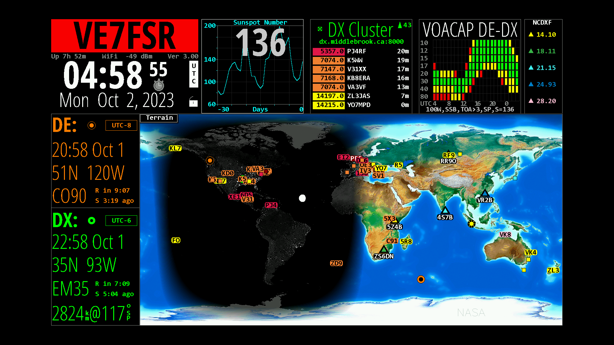

Reminder: Next KARC meeting is Thursday, October 5 at 7PM
Back to StoriesStory 758
Mon, 2023-10-02 10:34 — VE7FSR
The next club meeting will be held on October 5 at 7PM.

We will be featuring a demonstration of HamClock running on a Raspberry Pi 4.
This is a very affordable alternative to the Geochron 4K, and HamClock has a number of cool features that the Geochron does not!
If you have a spare flatscreen TV or computer monitor with an HDMI input you can build a very cool display for your hamshack.
This will be hybrid meeting, but you are encouraged to join us in person if you can because the HamClock demonstration will only be visible in person (sorry!).
For those who can only join online, please use this link: https://bbb.isurf.ca/b/ada-jnt-mkf Please note that annual membership fees were due in September , so if you haven't already renewed please remember to bring your cheque book or cash for Jordan.
I have attached the 2023/2024 membership form so please fill it out and bring it with you, or you may email the form to Jordan at jordan.mohle@gmail.com -- membership fees may also be paid by e-transfer to Jordan.
To join the meeting in person please meet outside the lobby of the Victoria Building at 210 Victoria Street.
The KARC meeting will be held in the offices of the Province of BC on the 5th Floor.
This is a controlled access building so please try to be there by 6:50pm so we can start the meeting promptly on time at 7pm.
Please wait outside until someone comes to open the door.
You may also call (250) 318-5150 to let us know you are downstairs waiting.
Attachment Size KARC Monthly Meeting Agenda October 2023.pdf 129.75 KB 2023-09-07 KARC Meeting Minutes.pdf 173.82 KB HamClockKey.pdf 905.64 KB